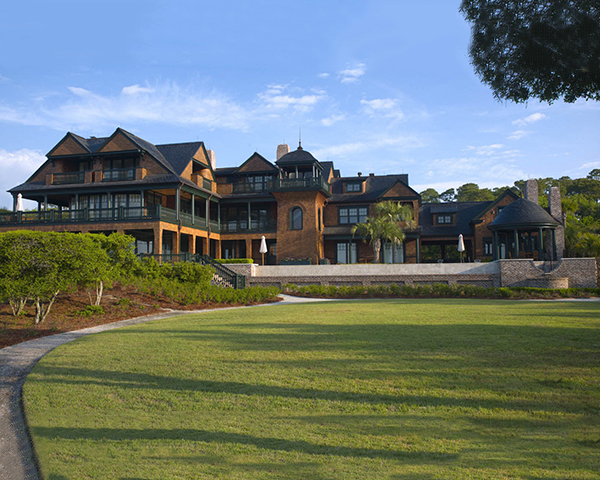

Mark P. Finlay Architects
Für dieses Projekt von Mark P. Finlay Architects in Kiawah Island, South Carolina (USA) entwickelte KORN Fenster- und Türlösungen, die höchste Ansprüche an Gestaltung, Material und Technik erfüllen.
Gefertigt in der eigenen Manufaktur in Wedel bei Hamburg — in einer Material- und Verarbeitungsqualität, die allen Wettbewerbsprodukten überlegen ist und über Generationen schön und wertstabil bleibt.
Produktlinien